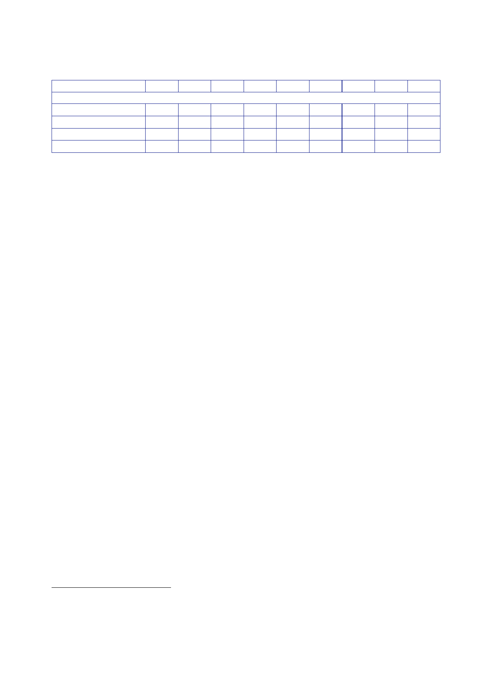

10.2 |
Reconstruction: July 2004 to July 2009
2002/03
Interdepartmental
Conflict Pools630
GCPP
Stabilisation
Aid Fund
Conflict
Pool
Total
2003/04
5
5
2004/05
16
27
2005/06
15
32
2006/07
20
35
2007/08
16
22
2008/09
19
26
2009/10
11
12
Total
72
19
11
159
1055.
SIGIR reported
in July 2009 that, as at June 2009, a total of nearly
US$140bn had
been allocated for the relief and reconstruction of
Iraq.627
That
comprised:
•
US$71bn
from Iraqi capital budgets and the Development Fund for Iraq
(DFI);
•
US$52bn
from the US; and
•
US$17bn
from other international donors.
1056.
The US
allocation included US$21bn from the Iraq Relief and
Reconstruction
Fund
(IRRF), US$18bn from the Iraq Security Forces Fund, US$4bn from the
Economic
Support
Fund and US$3.6bn from the CERPs.
1057.
From the
available information, it is not possible fully to assess the
impact of the
UK’s
reconstruction effort.
1058.
One difficulty
is that the Government never defined what contribution
reconstruction
should make to achieving broader UK objectives and so what
would
constitute
success or failure.
1059.
The
environment in Iraq made reconstruction very difficult. For almost
all of the
period
covered by the Inquiry, insecurity was the major constraint. Other
constraints
were:
•
the lack of
capacity within the Iraqi Government, both in Baghdad and the
South,
to support
and lead reconstruction;
•
the form
and implementation of de-Ba’athification;
•
the
politicisation of Iraqi institutions, and corruption;
•
the series
of relatively short-lived Iraqi administrations between 2004 and
2006
(with
limited remits to initiate reform and an inevitable churn of
Ministers and
senior
officials);
626
Letter
Cabinet Office [junior official] to Iraq Inquiry [junior official],
1 December 2011, ‘Iraq Inquiry:
Funding’.
627
Special
Inspector General for Iraq Reconstruction, Quarterly
Report and Semiannual Report to the
US Congress, 30
July 2009.
369